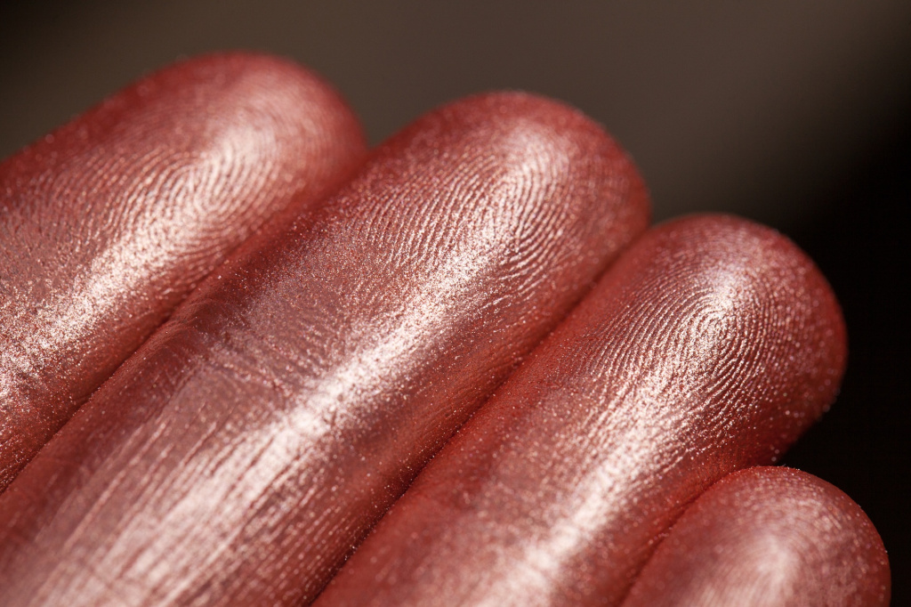
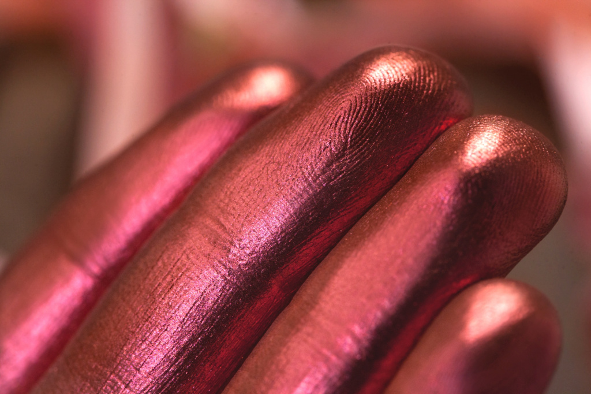
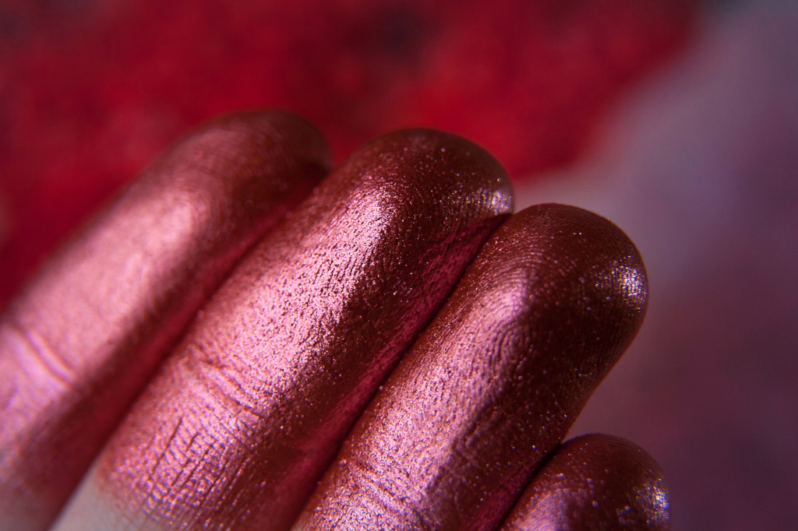
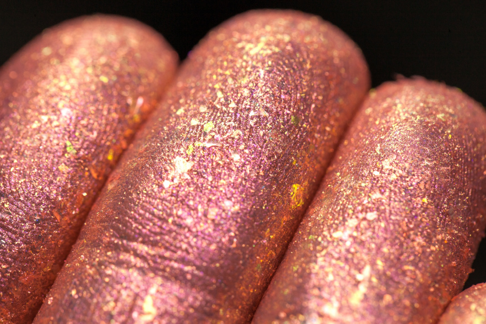
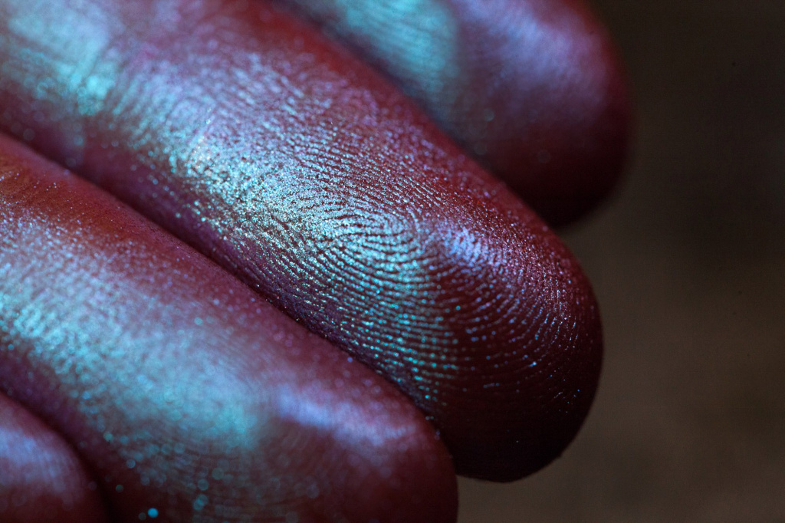

Дуохромы, шиммеры, топперы… кто все эти люди? Некоторые девушки годами пользуются минеральными тенями, но не вникают в разницу между шиммером и слюдой. Это, разумеется, не страшно, но может сыграть с вами злую шутку при выборе оттенка. Согласитесь, гораздо проще выбирать, когда понимаешь, какая текстура скрывается за тем или иным названием. Поэтому предлагаем вам вот такой гид по всем разновидностям блестящих текстур, что существуют в мире Sigil!
И начнём с простого. А это, конечно…
Все минеральные тени – это порошки с определённым размером частиц. Помол у сатина самый мелкий, размеры частиц от 10 до 60 микрон.
…Тут сделаем лирическое отступление про размеры для большей ясности. Микрон – это одна тысячная миллиметра. Для сравнения, человеческий волос около 100-150 микрон в диаметре. Невооружённым глазом мы можем различить частички примерно от 40 микрон.
Поэтому сатиновые тени для нас чаще всего выглядят однородными и гладкими, как шёлк – наш глаз не разбивает текстуру на отдельные частички, а видит сплошное «полотно» на коже. На ощупь сатины тоже гладкие и шёлковистые, они легко наносятся, часто их можно растушевать или нанести полупрозрачно.
Тут уже частички чуть побольше – от 30 до 80 микрон. Из названия текстуры понятно, что у этих оттенков ярко выраженный металлический финиш, это порошок с высокой степенью отражения. Часто такие оттенки наносятся плотным «жирненьким» слоем даже без базы. Поэтому нередко можно услышать, что металлики «жирные» или «маслянистые».
Это, конечно, не значит, что у них какой-то жир в составе, просто такая особенность текстуры. Проще всего добиться именно металлического сияния, если наносить тени плотным слоем или усилить их чуть влажной кистью, тогда некоторые дают вообще чуть ли не зеркальный блеск!
Вот здесь у многих начинается неопределённость, потому что оттенки с крупными «блёстками» очень разнообразны, и одни не понимает, почему шиммер это не так легко в обращении, как сатин; а другие, что шиммер – это не то же самое, что слюда. На самом деле всё проще, чем кажется.
Шиммер – это то, что видно! Мелкие сияющие частички размером от 60 до 100 микрон. То есть это уже то, что наш глаз видит, как отдельные точечки. Форма таких частичек правильная, округлая, поэтому в быту их часто называют обобщённо - «блёстки». Они могут быть в чистом виде, а могут быть смешаны с базой другой текстуры, например, сатином. Шиммеры не предназначены для растушёвки или нанесения растиранием – так они расслаиваются и получается база отдельно, а блёстки отдельно. Никогда не трите шиммеры – они от этого не лягут более равномерно, а просто натрут вам кожу и будут выглядеть грязными пятнами! Такие оттенки нужно наносить прикладывающими движениями (то есть «набивкой», как бы набивая оттенок на веко). Для этих оттенков нужна липкая база, с обычной они просто осыпятся. Так как частички у них больше, тяжелее, а следовательно - сцепляются с кожей они хуже, чем частички сатина.
Также в описании оттенков вы можете встретить такие категории как
МУЛЬТИШИММЕР - всё тот же шиммер, только разноцветный.
МИКРОШИММЕР - тоже обычный шиммер, только самого мелкого помола. Обычно он даёт эффект вспыхивающих на свету искр, при том что сами блёстки не сильно заметны в текстуре.
Это уже не привычные круглые блёстки, а частички неправильной формы, очень тонкие и мягкие пластинки, плоские «чешуйки» размером от 80 до 150 микрон – это средняя слюда, и от 150 до 300 микрон – это крупная слюда.
Слюда часто даёт эффект вкраплений похожих на цветные стёклышки, даже в мелком помоле. Её также нужно клеить на липкую базу.
Шиммеры и слюды чаще всего описываются словом «ТОППЕР», от англ. «топ» - верх. Это значит, что проще всего их вписать в макияж, как верхнее покрытие: то есть поставить сияющий акцент шиммером или слюдой, например, в центре века поверх готового макияжа из матовых и сатиновых оттенков.
Разберём его последним, потому что это характеристика не текстуры, а цвета. Это оттенки-хамелеоны, на которые смотришь прямо – одно, поворачиваешься – и они уже совершенно другое! Часто они выглядят как два контрастных цвета с промежуточным, более приглушённым; под разными углами к свету могут появляться разные отливы.
Народное название таких оттенков – «дуохром», но этот термин слишком узкий, поэтому у нас в описаниях не используется. Ведь все мы знаем эту особую магию Sigil: в одном оттенке может быть не только два цвета, но и три, и четыре, и даже больше:) Поэтому все оттенки, в которых есть преломление - то есть больше, чем один основной цвет - описываются как «призматик», не зависимо от текстуры. То есть может быть сатин-призматик, шиммер-призматик или призматическая слюда.
Надеемся, что этот небольшой гид поможет вам разобраться в нюансах минеральных текстур и сделает выбор теней проще!;)